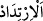
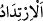

Süleyman (a.s.) “Ben bundan daha hızlı istiyorum” deyince “Kitaptan (Allah
tarafından verilmiş) bir ilmi olan kimse” Âsaf b. Berhiyâ “ise: “Gözünü açıp
kapamadan ben onu sana getiririm.” dedi.”
Âsaf b. Berhiyâ, Süleyman (a.s.)’ın teyzesinin oğlu, vezîri, kâtibi, küçükken kendisini
terbiye edip yetiştiren, sıdkı bütün/pek doğru, ilâhî kitapları okur, Allah’ın kendisiyle
duâ edildiğinde icâbet ettiği ism-i a’zamı bilen bir kimseydi. Allah onu Süleyman
(a.s.)’a yardım için ve emrini yerine getirmek üzere yaratmıştı.
Âyetteki “kitab” ile cins isim olarak Mûsâ (a.s.), İbrâhim (a.s.) ve diğer
peygamberlere indirilen kitaplar veya levh ve onun gizli sırları kasdedilmiştir.
Mu’tezile, bu kimse ile Cebrâil (a.s.)’ın kasdedildiğini söylemiştir. Çünkü onlar
evliyânın kerâmetini kabul etmezler.
“
” geri dönmek demektir. “
” göz kapaklarını hareket ettirmek ve bir şeye
bakmak için açmaktır. Göz kapaklarının geri dönmesi ise onları yummaktır. Bu, hareket
ettirmeye ihtiyaç duymayan tabiî bir durum olduğu için “
” ye “
” tercih
edilmiştir. “
” ile bakış ifâde edilir. Çünkü göz kapaklarını hareket ettirmek bakıştan
ayrılmaz/onunla beraberdir.
“Gözü açıp kapamak” ifâdesi, hızlılıkta en son noktadır ve bu konuda meseldir.
Çünkü göz kapaklarını hareket ettirme arasında bir süre yoktur.
Kâşifî der ki: “Süleyman emretti, o da secdeye kapandı ve İbrânice dilinde “Âhya
şerâhiyâ” yâni “Ya Hayyu ya Kayyum” dedi. Bazılarının görüşüne göre “Ya Ze’l-celali
ve’l-ikram” dedi. Her durumda duâ edince, Belkıs’ın tahtı bulunduğu yerden yere
girip/batıp göz açıp kapayıncaya kadar Süleyman’ın tahtının yanında yerden çıktı.”
Maânî ehli der ki: “Allah’ın kudretinden olarak onu bulunduğu yerde yok edip sonra
kendisinde kitabdan bir ilim bulunan kimsenin duâsıyla hiçbir aralık olmadan Süleyman
(a.s.)’ın bulunduğu yerde var etmesi inkâr edilemez. Bu iş, velî için bir kerâmet ve nebî
için ise bir mûcizedir.
Fakir (Bursevî) der ki: Bu, var etme/yaratma ve yok etme meselesidir. Hz. Peygamber
(s.a.)’in: “Dünya bir saattir/andır.”[62] Bunu anlayan çok azdır. Çünkü bu, akıl
dâiresinin dışındadır.
Mesnevî’de der ki:
Demek ki senin için her an ölüm ve geri dönüş var
Mustafa (a.s.) “Dünya bir andır” buyurdu
Dünya her solukta yenilenir
Bizse durur gibi görünmesi yüzünden bundan habersiziz
Ömür ırmak gibi yeniden yeniye akar gelir
Ama bedende bir süreklilik gösterir
O, elinde hızla salladığın sopanın kıvılcımı gibidir
Hızdan dolayı sürekli bir şekle sâhiptir